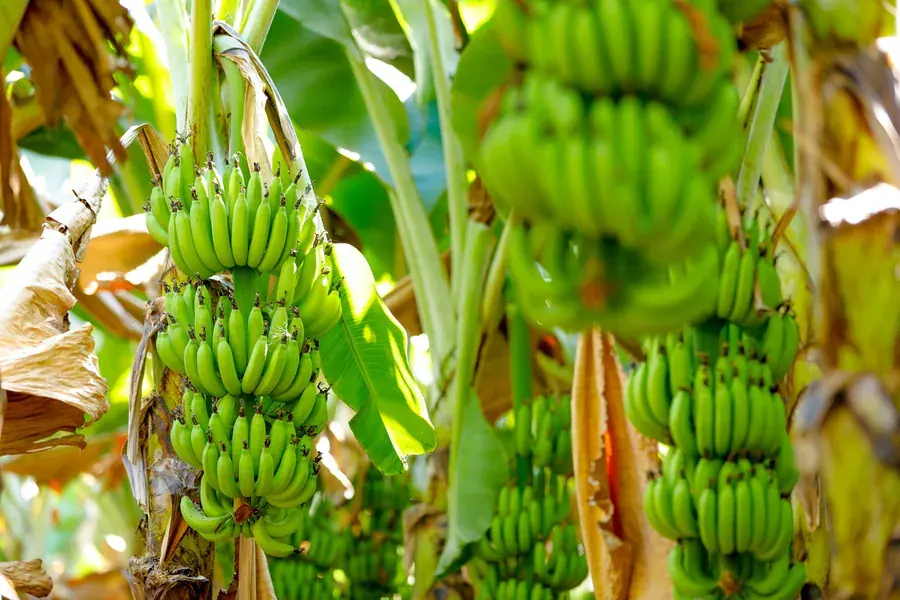

قصتناOur story
انطلقت جولدن فايبر عام ٢٠٢٦ في محلة مالك – مركز دسوق بمحافظة كفر الشيخ، على يد سبعة من شباب المنطقة رأوا في مخلفات حقول الموز ثروة مهدرة. تأسست الشركة كشركة ذات مسؤولية محدودة بدعم من مكوّن المشروعات الصغيرة في مشروع تعزيز الزراعة الذكية مناخياً والتنوع البيولوجي الزراعي.
نعمل على تحويل المخلفات الزراعية إلى مواد خام ذات قيمة اقتصادية: ألياف الموز تُعالج وتتحول إلى خيوط ثم إلى منتجات متعددة، ومن عصارة السيقان ننتج سماداً سائلاً غنياً بالبوتاسيوم يعيد للأرض ما أخذته الشجرة.
Golden Fiber was founded in 2026 in Mahallet Malek, Desouk (Kafr El-Sheikh) by seven young people from the area who saw banana-field waste as an untapped resource. The company was established as an LLC with the support of the small-enterprise component of a climate-smart agriculture and agro-biodiversity project.
We turn agricultural waste into valuable raw materials: banana fibre is processed into yarn and many products, and the stem sap becomes a potassium-rich liquid fertilizer that gives back to the soil what the plant took.

رؤيتناVision
المساهمة في بناء مستقبل أكثر استدامة من خلال إعادة تدوير المخلفات الزراعية وتحويلها إلى موارد ومنتجات مفيدة، بما يدعم الاقتصاد الدائري ويحافظ على البيئة.To help build a more sustainable future by turning agricultural waste into useful resources and products – supporting the circular economy and protecting the environment.
رسالتناMission
تطوير وتطبيق حلول مبتكرة ومستدامة لإدارة المخلفات الزراعية وتحويلها إلى منتجات ذات قيمة مضافة، عبر البحث العلمي والتكنولوجيا الحديثة والتدريب والشراكات المجتمعية.To develop innovative, sustainable solutions that turn farm waste into value-added products – through research, modern technology, training and community partnerships.
من نخدمWho we serve
مصانع الحبال والغزل والنسيج، شركات الأسمدة، مصانع الكرتون والتغليف، الحرفيون والأشغال اليدوية، وتجار الجملة والتجزئة.Rope, spinning and textile mills, fertilizer companies, board and packaging plants, artisans and handicraft makers, wholesalers and retailers.